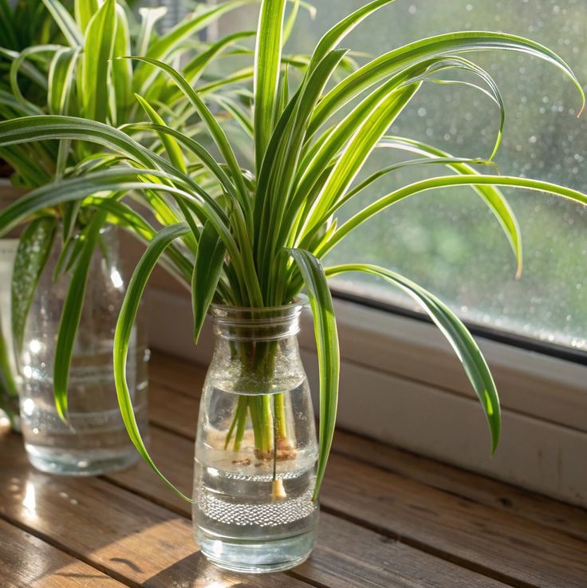
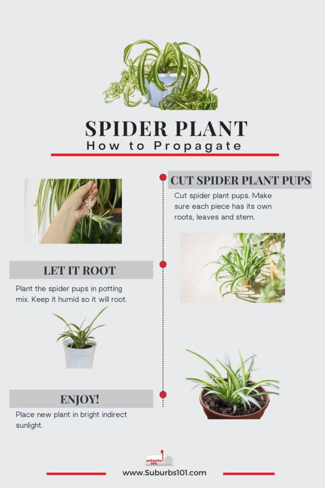

Spider Plant (Chlorophytum comosum)
General Information
Scientific Name: Chlorophytum comosum
Family: Asparagaceae
Type: Herbaceous perennial (commonly grown as a houseplant)
Height: 12 to 24 inches
Uses of Spider Plant:
- Ornamental: Popular indoor plant with arching green-and-white striped leaves.
- Air Purifying: Known for removing indoor air pollutants like formaldehyde and carbon monoxide.
- Educational: Frequently used in classrooms and dorms due to its easy care.
Medicinal & Traditional Uses:
- Limited traditional use in African herbal remedies for inflammation.
- Primarily valued for its non-toxic nature and air-purifying qualities.
- Safe: Non-toxic to pets and children, making it ideal for homes.

Description
The Spider Plant is a fast-growing, clumping plant known for its arching, narrow leaves with white or yellow stripes. It produces long stems with small white flowers and baby plantlets ("spiderettes"), which dangle attractively and can root easily.
Habitat & Growth
- Native Regions: Tropical and southern Africa
- Soil: Well-drained, loamy potting soil
- Sun: Prefers bright, indirect light; tolerates shade
- Watering: Keep soil lightly moist; avoid waterlogging

Propagation
Spider plants are easily propagated through plantlets or “pups” that form on flowering stems. These can be rooted in soil or water. Division of mature plants is also effective for propagation.
Fun Facts & Cultural Significance
- Also called “Airplane Plant” due to its arching runners and plantlets.
- Was part of NASA’s Clean Air Study for its ability to filter toxins.
- Low-maintenance and drought-tolerant once established.
- Considered a symbol of renewal and simplicity in many home décor traditions.